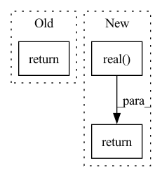

Pattern ID :15660

Before Change
def bind(self, other: "HRR") -> "HRR":
result = ifft(torch.mul(fft(self), fft(other)))
return result.real
def multibind(self) -> "HRR":
result = ifft(torch.prod(fft(self), dim=-2, dtype=self.dtype))
After Change
result = ifft(torch.mul(fft(self), fft(other)))
return torch.real(result)
def multibind(self) -> "HRR":
Bind multiple hypervectors
result = ifft(torch.prod(fft(self), dim=-2, dtype=self.dtype))
In pattern: SUPERPATTERN
Frequency: 4
Non-data size: 3
Instances
Fragment ID: 53007021
Project Name: hyperdimensional-computing/torchhd
Commit Name: f7eb84a59c1a1ccec7ae077d8663ac2d7bad1fc7
Time: 2023-01-12
Author: mikeheddes@gmail.com
File Name: torchhd/hrr.py
M Class Name: HRR
N Class Name: HRR
M Method Name: bind(2)
N Method Name: bind(2)
M Parent Class: VSA_Model
N Parent Class: VSA_Model
M File Name: torchhd/hrr.py
N File Name: torchhd/hrr.py
M Start Line: 108
M End Line: 109
N Start Line: 246
N End Line: 247
'>
Before Change
return self.start_lr * (cur_iter / self.warmup_steps)
else:
curr_lr = self.start_lr * ((1 - float(cur_iter) / self.total_iters) ** self.lr_power)
return curr_lr if curr_lr > self.min_lr else self.min_lr
class MultiStageLR(BaseLR):
After Change
return self.start_lr * (cur_iter / self.warmup_steps)
else:
curr_lr = self.start_lr * ((1 - float(cur_iter) / self.total_iters) ** self.lr_power)
return numpy.real(numpy.clip(curr_lr, a_min=self.end_lr, a_max=self.start_lr))
class MultiStageLR(BaseLR):
def __init__(self, lr_stages):
'>
Fragment ID: 53007022
Project Name: tianyu0207/pebal
Commit Name: 14194a976680a6a556be013d63888eafb250df9a
Time: 2022-07-03
Author: 102338056+yyliu01@users.noreply.github.com
File Name: code/engine/lr_policy.py
M Class Name: WarmUpPolyLR
N Class Name: WarmUpPolyLR
M Method Name: get_lr(2)
N Method Name: get_lr(2)
M Parent Class: BaseLR
N Parent Class: BaseLR
M File Name: code/engine/lr_policy.py
N File Name: code/engine/lr_policy.py
M Start Line: 41
M End Line: 42
N Start Line: 41
N End Line: 42
'>
Before Change
def multibind(self) -> "HRR":
result = ifft(torch.prod(fft(self), dim=-2, dtype=self.dtype))
return result.real
def inverse(self) -> "HRR":
return self.flip(dims=(-1,)).roll(1, dims=-1)
After Change
def multibind(self) -> "HRR":
Bind multiple hypervectors
result = ifft(torch.prod(fft(self), dim=-2, dtype=self.dtype))
return torch.real(result)
def exact_inverse(self) -> "HRR":
Unstable, but exact, inverse
result = ifft(1.0 / fft(self).conj())
'>
Fragment ID: 53007023
Project Name: hyperdimensional-computing/torchhd
Commit Name: f7eb84a59c1a1ccec7ae077d8663ac2d7bad1fc7
Time: 2023-01-12
Author: mikeheddes@gmail.com
File Name: torchhd/hrr.py
M Class Name: HRR
N Class Name: HRR
M Method Name: multibind(1)
N Method Name: multibind(1)
M Parent Class: VSA_Model
N Parent Class: VSA_Model
M File Name: torchhd/hrr.py
N File Name: torchhd/hrr.py
M Start Line: 112
M End Line: 113
N Start Line: 251
N End Line: 252
'>
Before Change
return result.real
def inverse(self) -> "HRR":
return self.flip(dims=(-1,)).roll(1, dims=-1)
def negative(self) -> "HRR":
return torch.negative(self)
After Change
result = ifft(fft(self).conj())
return torch.real(result)
def negative(self) -> "HRR":
rNegate the hypervector for the bundling inverse.
'>
Fragment ID: 53007024
Project Name: hyperdimensional-computing/torchhd
Commit Name: f7eb84a59c1a1ccec7ae077d8663ac2d7bad1fc7
Time: 2023-01-12
Author: mikeheddes@gmail.com
File Name: torchhd/hrr.py
M Class Name: HRR
N Class Name: HRR
M Method Name: inverse(1)
N Method Name: inverse(1)
M Parent Class: VSA_Model
N Parent Class: VSA_Model
M File Name: torchhd/hrr.py
N File Name: torchhd/hrr.py
M Start Line: 116
M End Line: 116
N Start Line: 284
N End Line: 285